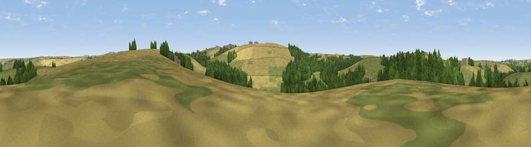

Viewpoint near St. Newlyn East
#38025 in England · top 76% of its area beats it · near St. Newlyn EastWhere it is
The exact computed spot (SW 84175 56025). Click the marker for map links.
The view, rendered

A 360° render of this exact spot computed from the terrain model, tree cover and land cover — summer colours, afternoon light, calibrated against photographs of famous viewpoints. Real trees, hedges and buildings will differ in detail.
The panorama
Grey silhouette: terrain skyline in each direction (720 bearings, Earth curvature and refraction included). Dashed green: skyline with trees (+15 m) and buildings (+8 m) as obstacles. Blue strip: how far the ground is visible on each bearing.
Where the view opens
Wedge length = distance to the farthest visible ground on that bearing (vegetation-aware). Rings at 10, 25 and 50 km.
What fills the view
41% grassland · 38% cropland · 19% woodland · 1% built-up
Angular shares of the visible panorama (visual magnitude), not map area. Landscape diversity 0.48 (0–1 Shannon).
Key numbers
More beautiful places nearby
The staircase of upgrades: each row has a higher view potential than everything closer. Driving times are estimates from straight-line distance, calibrated against real road routing — check an actual route before setting out.
| Place | Direction | Drive | Score |
|---|---|---|---|
| Viewpoint near St. Newlyn East | WNW · 1 km | ~2 min | 49.5 |
| Viewpoint near St. Newlyn East | E · 1 km | ~3 min | 50.1 |
| Viewpoint near St. Newlyn East | S · 2 km | ~5 min | 70.7 |
| Viewpoint near Penhale | E · 7 km | ~15 min | 81.7 |
| Viewpoint near Foxhole | E · 13 km | ~25 min | 86.4 |
| Viewpoint near Stenalees | E · 16 km | ~28 min | 88.0 |
| Viewpoint near Crackington Haven | NE · 48 km | ~69 min | 88.1 |
| Viewpoint near Combe Martin | NE · 119 km | ~143 min | 88.9 |
50.36446, -5.03602 · source: screening · position refined by local search. Computed location — check access rights before visiting.